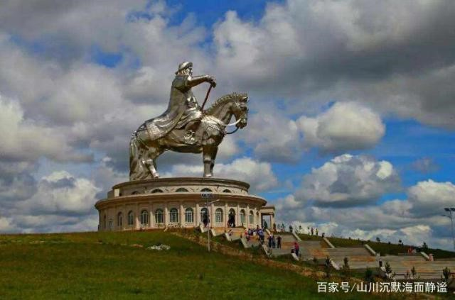
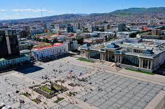
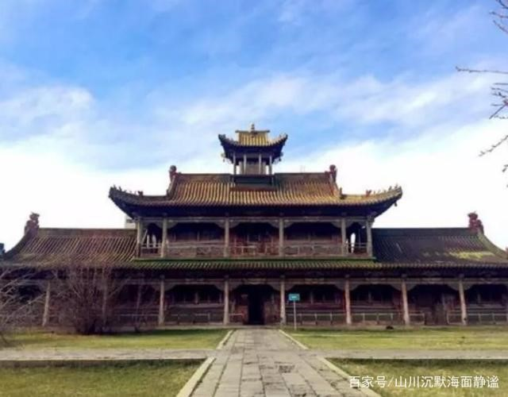
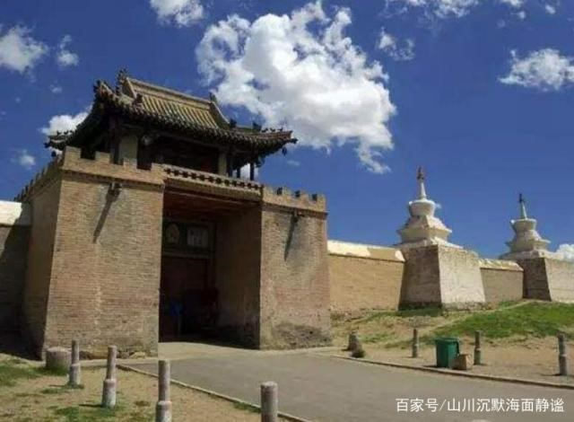

안녕하세요! 오늘 소개할 몽골 여행을 할 때 주의해야 할 사항과 몽골에는
어떤 관광 명소가 있는지에 대해 알아보겠습니다.
패키지가 아니고 솔플여행은 쉬운게 아니죠.
특히 해외 여행을 위해서는 미리 준비해야 합니다.
물론 혼자하는 만큼 더 가치있는 여행 일 수 있기 때문에 구체적으로 준비하는 것이 맞습니다.


★ 몽골 최대의 호수, 최고의 휴양지 홉스골 호수 ★
몽골의 푸른 진주라고 불리는 홉스골 호수는 너비 136km에 이르는 넓은 호수로 시베리아의 타이가 기후까지 뻗어 있습니다.
우리나라의 제주도 면적의 1.9배나 되는 엄청난 크기와 세계 담수 총량의 1%를 차지하고 있는 풍부한 수량의 이곳은 몽골
최고의 휴양지 답게 아름다운 자연환경으로 인기가 높습니다.

★울란바토르★의 많은 건물은 17 세기의 몽골 수도이자 많은 철도와 장거리 버스의 모임 장소이며 울란바토르의 국가 문화 교육 센터이기도합니다.
문화 센터, 교육 부서 및 박물관, 사원 및 도시의 조합이 있습니다.

★Borghese Khan Palace,★ 몽골에 와서 Bogdo Khan 산 기슭에서 1,933 년에 역사입니다.
여기는 몽골의 매우 중요한 역사적 기념물이며.,
건축 과정 전체에 걸쳐 총 7 개의 수도원이 있습니다.
못이없는 매우 전통적인 중국식 건물이며, 여기에도 저장되어 있으며, 많은 생활 용품과 종교적 도구는 매우 가치가 있습니다.
여기의 문화적 분위기는 매우 강합니다. .

★몽골의 수도 울란바토르★에서 300km 이상 떨어진 할레와 린 유적지는 13 세기 몽골 제국의 수도이며 징기스칸 몽골 제국의 수도이며,
세계 최초의 육상 무역 국제 대도시이기도합니다. 이곳은 1368 년 명나라 왕조에 의해 파괴되었습니다.이 곳은 매우 가치가 있으며,
고대 유적지가 현대에 재건되었으며 관광객들에게도 개방되어 있습니다.
이곳에서 발굴 된 문화 유적지 보호 프로젝트는 매우 귀중한 문화적 유물로, 13 세기 건축에서 볼 수있는 것은 매우 가치있는 일입니다.